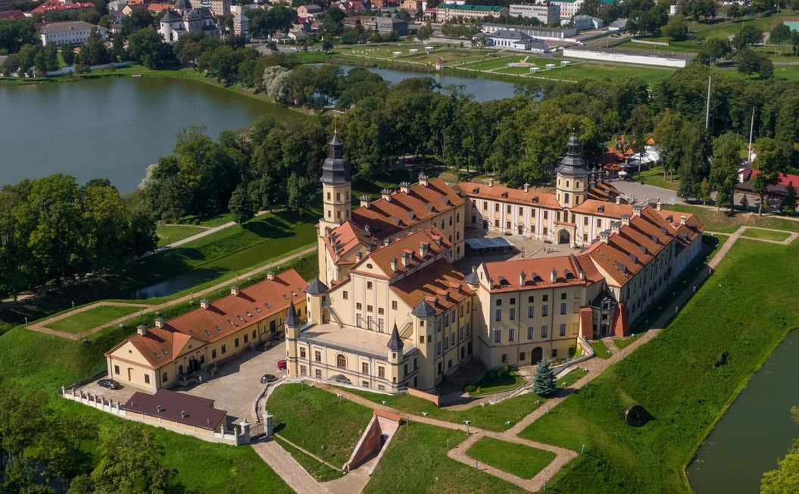
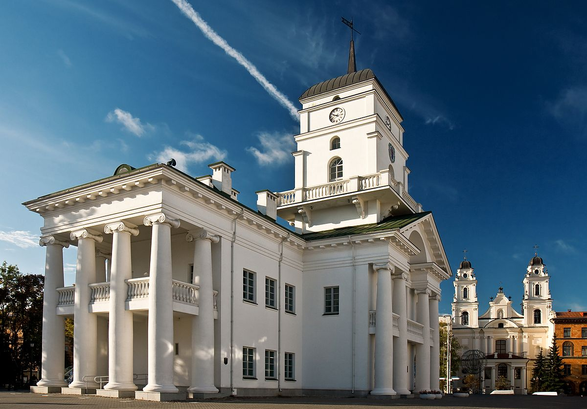
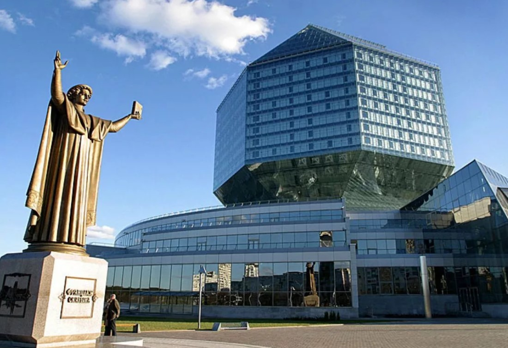

Мирский замок
Мирский замок, находящийся в Мире, представляет собой шедевр белорусской готической архитектуры, включенный в список всемирного наследия ЮНЕСКО.

Несвижский замок
Несвижский замок является великолепным примером ренессансной архитектуры и был резиденцией богатейшего рода Радзивиллов.

Минская ратуша
Минская ратуша - символ местного самоуправления и важный памятник классической архитектуры и городской истории Минска.

Национальная библиотека Беларуси
Национальная библиотека Беларуси, расположенная в Минске, известна своей уникальной формой и является важным культурным и образовательным центром страны.